iOS-app för spårträning
Användarmanual
Allt du behöver för att lägga spår, spåra och följa träningen över tid.
Senast uppdaterad: 20. november 2026
01
Kom igång
Trax är gjord för hundförare som tränar spår. Du lägger spåret med telefonen i fickan, lägger ut föremål längs vägen och låter sedan hunden spåra medan appen visar var spårläggaren gick.
- Första gången du öppnar appen får du en kort introduktion. Tryck på ”Fortsätt” för att gå igenom den.
- Tryck på ”Tillåt platsåtkomst” och välj ”Tillåt när appen används”.
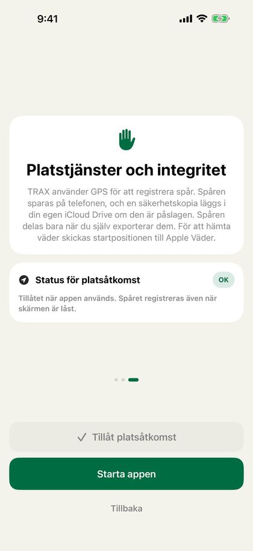
Tips: ”När appen används” räcker. När du har tryckt på ”Starta” fortsätter registreringen även när skärmen är låst eller du byter app, och iOS visar en blå markering högst upp på skärmen. Du kan ändra åtkomsten under Inställningar › Trax › Plats på din iPhone.
Trax behöver ”Exakt plats”. Utan den kan positionen bli flera hundra meter fel. Om den är avstängd ber appen om exakt plats när du ska lägga spår eller spåra, och visar kortet ”Exakt plats är av” med en länk till Inställningar. Slå på ”Exakt plats” för Trax där.
Trax och användarmanualen följer språket på telefonen: svenska, norska (bokmål), tyska eller engelska. Vill du använda ett annat språk än telefonens väljer du det under Inställningar › Språk.
02
Hemskärmen
Härifrån startar du allt, och här hittar du alla dina spår.
Den gröna toppen visar siffrorna för den här månaden: antal spår, hur många km de blev sammanlagt och hur stor del av föremålen som hittades. Uppe till höger finns tassen och kugghjulet. Tassen öppnar hundsidan med nyckeltal, mål och utveckling för varje hund (se ”Hundar”), och kugghjulet öppnar Inställningar. ”Importera spår” och användarmanualen finns i Inställningar (se ”Inställningar”).
- ”Redo att spåra” visar spår som har lagts men som hunden inte har spårat ännu. De visas som stora kartkort högst upp, och har du flera bläddrar du åt sidan. Prickarna under visar hur många det är. Etiketten på kortet visar status (”Redo”, ”Redo om …” medan spårets ålder räknas ner, eller ”Spåret pågår” om spåret har startats men inte stoppats) och spårets ålder, och en stapel visar hur långt åldern har kommit. Kortet visar också längden, antal föremål och hunden spåret är lagt för, till exempel ”för Luna”.
- ”Starta” på kortet tar dig direkt till spåret. Tryck annars på kortet för att öppna spåröversikten. Håll fingret på kortet och välj ”Radera” för att radera spåret.
- ”Senaste spår” visar de tre senaste avslutade spåren. Varje rad har en liten karta med spårtypen som märke, datum, längd och hund på en rad, och fynden till höger, till exempel 3/3. Den lilla kartan visar din rutt i samma färger som i spåröversikten: grön, orange eller röd efter hur långt från spåret den gick (se ”Avvikelse från spåret”). Tryck på ett spår för att se detaljerna.
- Svep ett spår åt vänster för att radera det. ”Visa alla” vid ”Senaste spår” öppnar sidan ”Avslutade spår” med alla dina spår.
- ”Nytt spår” är den gröna knappen längst ner, och startar spårläggning.
- Finns det en nyare version av Trax i App Store visas kortet ”Ny version av Trax” under toppen. ”Uppdatera” öppnar Trax i App Store, och krysset döljer meddelandet till nästa version kommer. Appen kontrollerar högst en gång om dygnet, och bara när du är på hemskärmen.
- Har du uppdaterat från en version utan hundsidan visar en bubbla vid tassen en gång ”Nytt: Hundsidan”. ”Visa mig” öppnar hundsidan, och ”Senare” stänger bubblan. Tassen har märket ”NY” tills du har öppnat hundsidan.
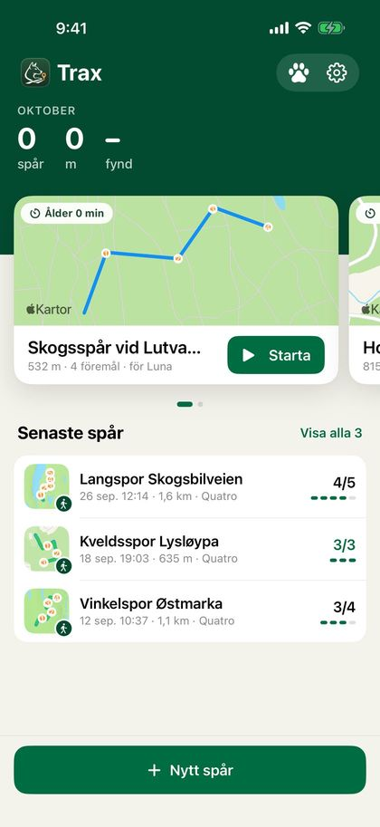
På sidan ”Avslutade spår” är spåren grupperade per månad. Svep ett spår åt vänster för att radera det.
- Om du har registrerat hundar visas knappar högst upp: ”Alla” och en för varje hund, med hundens första bokstav i färg. Spår utan hund finns under ”Alla”. När du väljer en hund ser du bara dess spår, och den gröna raden ”Se analys för …” öppnar hundsidan för hunden (se ”Hundar”). Har hunden inga avslutade spår står det ”… har inga avslutade spår ännu”.
- Hundar som du har raderat behåller sin knapp så länge de har spår. Vill du dölja en sådan hund håller du fingret på knappen och väljer ”Dölj från filtret”. Du kan visa den igen under Inställningar › Mina hundar › ”Tidigare hundar”.
- Om spåren på sidan har minst två spårtyper visas knappar för spårtyp under hundknapparna: ”Spår”, ”IGP-spår”, ”Viltspår”, ”Föremålssök” och ”Ytsök”. Finns det minst två sorters spår (spår, IGP-spår eller viltspår) kommer också ”Alla spår” först. Den visar bara spår. Föremålssök och ytsök är egna övningar och visas bara under sina egna knappar, med egen statistik (se ”Sök: föremålssök och ytsök”).
- Små ikoner på raden visar om spåret har importerats (pil in) och om du har exporterat det (pil ut).
03
Lägga spår
Som spårläggare går du spåret först, medan appen registrerar rutten med GPS.
- Tryck på ”Nytt spår” på hemskärmen.
- Välj övning med de stora knapparna: ”Spår”, ”IGP-spår”, ”Viltspår” eller ”Sök”. ”Spår” är förvalt (se ”Spårtyp och viltspår” och ”Sök: föremålssök och ytsök”).
- GPS:en startar så fort skärmen öppnas. Vänta tills GPS-pricken högst upp är grön eller gul och tryck sedan på den stora gröna ”Starta”-knappen.
- Gå spåret. Rutten ritas på kartan medan du går.
- Tryck på ”Föremål” för att lägga ut ett föremål där du står (se ”Föremål”).
- Behöver du en paus trycker du på ”Pausa”. Tryck på ”Fortsätt” för att gå vidare. Sträckan medan spåret är pausat registreras inte.
- Håll in ”Stoppa” när spåret är lagt. Knappen fylls medan du håller in, och spåret stoppas när den är full. Då stoppar du inte spåret av misstag.
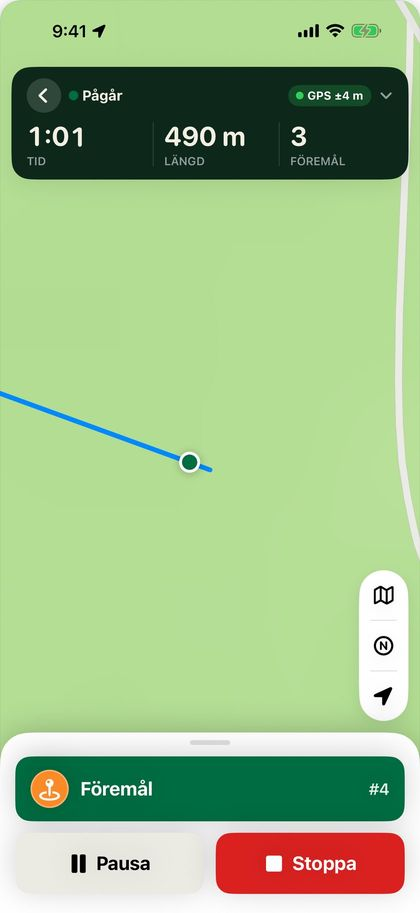
Om GPS-signalen är svag innan du startar visas en ruta under fältet högst upp. Röd betyder att du bör vänta på bättre signal, gul att du kan starta men att spåret blir mer exakt om du väntar. Rutan stängs av sig själv när signalen blir bra, eller när du trycker på ”OK, uppfattat”. Du kan alltid starta.
Fältet högst upp visar tid, längd och antal föremål med stora siffror, hur exakt GPS:en är och batterinivån. Grön prick betyder bättre än 10 meter, gul 10–25 meter och röd mer än 25 meter. Står det ”Ingen GPS” har telefonen inte haft någon position på mer än 15 sekunder. När du har lagt ut ett föremål visar fältet också ”Från förra”: hur många meter du har gått sedan förra föremålet. Tryck på fältet för att se när spåret startade, när positionen senast uppdaterades, koordinaten där du står och när förra föremålet lades.
När du trycker på ”Starta” zoomar kartan in på dig, alltid till samma vy. Om du zoomar under spåret behåller kartan den zoom du valde.
Kartknapparna till höger är samlade i en kapsel. Den översta knappen öppnar kartmenyn, där du väljer ”Karta”, ”Topo” eller ”Satellit”, och slår på eller av ”Nattläge” (se ”Nattläge”). Topo är den topografiska kartan från norska Lantmäteriet (Kartverket), med höjdkurvor och stigar. Den kräver internet, visar ”© Kartverket” längst ner och finns bara i Norge. Nere till vänster på kartan finns en skalstock, så att du ser avstånden. N-knappen byter kartriktning: norr uppåt, eller en karta som vrider sig efter riktningen du står vänd åt. Ditt val sparas, och du kan även ändra det under Inställningar › Karta och spår. Kartan följer din positionsprick. Om du drar i kartan, till exempel för att flytta hörnen på ett fält, slutar kartan följa dig och stannar där du lämnade den. Om du zoomar eller vrider kartan följer den dig fortfarande. Den nedersta knappen visar en tom pil när kartan inte följer dig. Tryck på den så centreras kartan på dig igen och följer dig vidare, med samma zoom.
Pilen ovanför kartknapparna visar vinden (se ”Väder”).
Medan du lägger spåret visas det på låsskärmen och i Dynamic Island med tid, längd och antal föremål. På låsskärmen kan du trycka på ”Pausa” eller ”Fortsätt”, och på ”Föremål” för att lägga ut ett föremål utan att låsa upp telefonen.
Viktigt: Om du trycker på bakåtpilen uppe till vänster i fältet innan spåret är stoppat frågar appen om du vill slänga spåret eller stoppa och spara det. Ett slängt spår kan inte återställas.
04
Spårplaner
Planera spåret på kartan innan du lägger det: sträckor, föremål och längden på varje sträcka. Samla spåren för en träningsdag i en grupp, så ser du att de inte korsar varandra.
Tryck på ”Planer” till höger om ”Nytt spår” på hemskärmen, och på ”+” uppe till höger för en ny plan.
- Tryck på kartan där spåret ska börja, och sedan där det ska svänga och sluta. Längden på varje sträcka står mitt på sträckan, och längden på hela spåret under kartan.
- Välj ”Föremål” under ”Tryck på kartan lägger till”, och tryck på spåret där föremålen ska ligga. Föremålen hamnar på spårlinjen och numreras i ordning från start. På blodspår kan du också välja sårbädd och vilt.
- Håll inne och dra en punkt eller ett föremål för att flytta det. Tryck på en punkt för att välja den, och på ”Radera punkt” för att ta bort den. ”Ångra” tar tillbaka den senaste ändringen.
- Tryck på ”Spara”. Ge planen ett namn, välj eller skriv en grupp, välj spårtyp och skriv gärna ett meddelande till den som ska lägga spåret. ”Spara” i bladet sparar planen och tar dig tillbaka till listan.
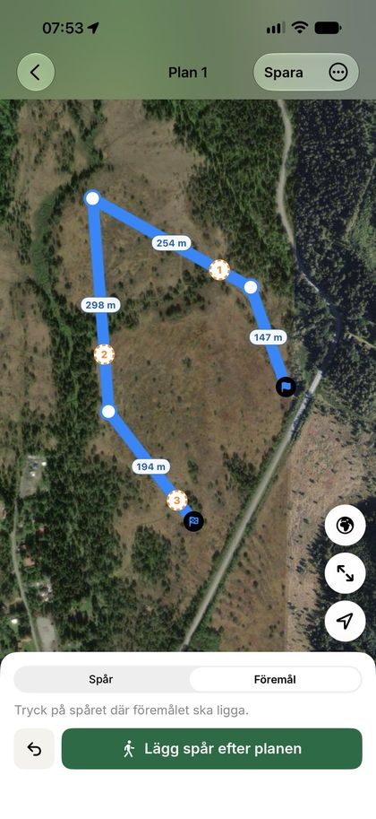
Trycker du på ”Tillbaka” innan en ny plan är sparad, frågar appen om du vill kasta den. En sparad plan sparas automatiskt när du ändrar den. Namn, grupp, spårtyp och meddelande ändrar du senare i menyn uppe till höger, där du också hittar ”Vänd spåret”, ”Dela plan” och ”Radera plan”.
Kartan börjar på satellit. Kartknappen nere till höger växlar mellan ”Karta”, ”Topo” och ”Satellit”, och slår på eller av ”Visa andra planer”. De andra planerna visas vitt streckade. Korsar spåret en annan plan, eller kommer närmare än 30 meter, visas en varning under kartan.
Listan har ett kort för varje grupp. Kartan överst i kortet visar alla planer i gruppen, numrerade och i var sin färg, och säger ”Inga spår korsar” eller varnar om spår korsar eller ligger för nära. Under kartan står planerna med längd och föremål, och ”Lägg” för att lägga spåret. Tryck på en plan för att öppna den. Med ⋯ vid gruppnamnet gör du en ny plan i gruppen, byter namn på gruppen eller delar alla planer i gruppen. Planer utan grupp har var sitt kort längst ned. Håll inne på en plan för att lägga spåret, dela planen eller radera den.
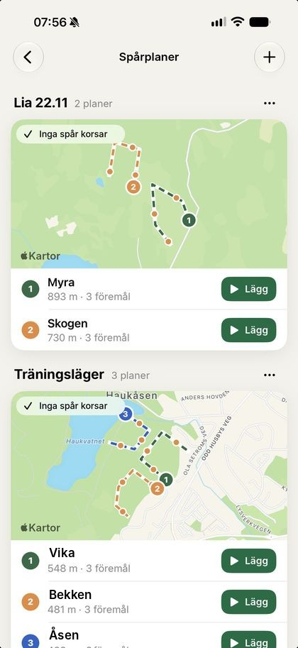
Lägg spår efter planen: tryck på ”Lägg” i listan, eller ”Lägg spår efter planen” när planen är öppen. ”Lägg spår” öppnas med planens spårtyp, och planen visas streckad på kartan med längderna och föremålen. De andra planerna i samma grupp visas svagare, bara så att du ser var de ska ligga. På satellit är planen orange och de andra vita. Innan du trycker på ”Start” visar ett kort överst planens namn, längden, avståndet till start och meddelandet. När spåret sparas föreslås planens namn, och planen märks ”Lagt” med datum i listan.
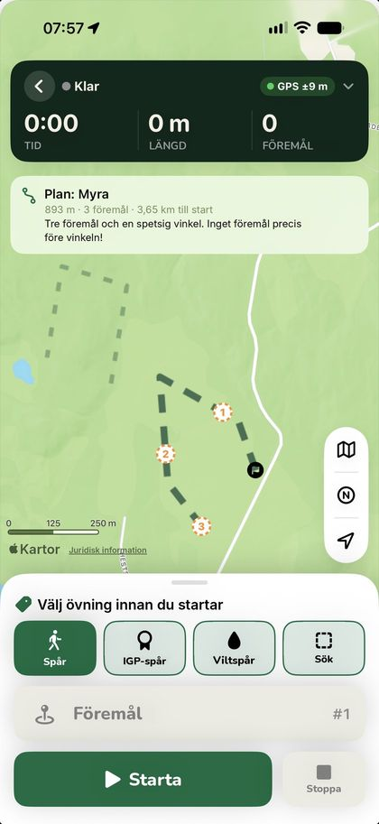
Dela plan: ”Till en annan Trax-användare” skickar planen som en fil som öppnas i Trax och hamnar i Spårplaner hos mottagaren. ”Som GPX till andra kartappar” skickar spåret som rutt och föremålen som punkter. Planerna ingår i säkerhetskopian.
Tips: Planen är en riktlinje. Lägg spåret efter terrängen, och använd de streckade linjerna för att hålla spåren isär.
05
Spårtyp och viltspår
Välj om spåret är ett vanligt spår, ett IGP-spår eller ett viltspår. Viltspår har egna knappar och egna val. Föremålssök och ytsök finns under ”Sök” (se ”Sök: föremålssök och ytsök”).
Du väljer spårtyp med de stora knapparna under ”Välj övning innan du startar” på skärmen för spårläggning, innan du trycker på ”Starta”. Du kan ändra den i efterhand i kortet ”Spårtyp” i spåröversikten. Spårtypen visas på spåret, i PDF:en och i filen när du skickar spåret.
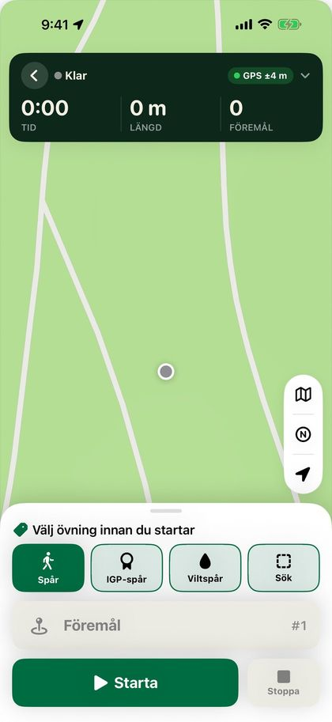
På viltspår ersätts ”Föremål” av tre knappar:
- ”Sårbädd” lägger ut en sårbädd där du står. Den visas som en mörkröd droppe på kartan.
- ”Blodavbrott” markerar att det inte finns blod härifrån. Knappen heter ”Blod igen” så länge blodavbrottet varar. Tryck på den där blodet börjar igen. Blodavbrottet visas som en streckad vit linje ovanpå spåret.
- ”Vilt” markerar var viltet ligger, med en brun målflagga på kartan.
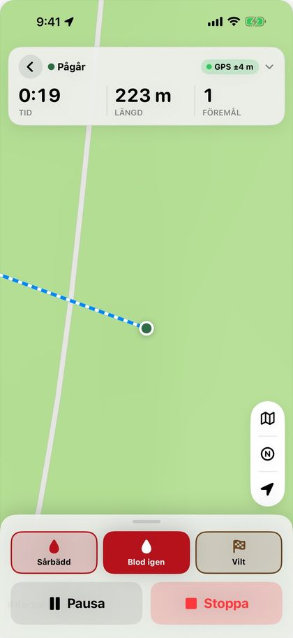
Där viltspåret börjar visas ”Skottplats” med en pil för flyktriktningen. Efter ”Stoppa”, och senare i spåröversikten, väljer du ”Flyktriktning”: ”Automatisk” (utifrån spårets första 15 meter), en kompassriktning eller ”Ingen pil”. Stäng av ”Visa flyktriktning för hundföraren” när flyktriktningen inte ska vara markerad. Skottplatsen och pilen visas även på okänt spår.
I kortet ”Blod och spårsko” anger du blodmängden i dl (valfritt) och slår på eller av ”Spårsko/klöv”. Under fältet ser du blod per 100 meter spår. Mindre blod per 100 meter gör spåret svårare. Dina senaste värden föreslås nästa gång.
Viltspår har egna val för spårets ålder, från 30 minuter till 24 timmar (se ”Spårets ålder”).
När hunden spårar viltspåret räknas sårbäddar och vilt som föremål. Aviseringen säger ”Nära sårbädd” eller ”Nära vilt”, och fyndet registreras som ”Registrerat som hittat: Sårbädd”. Före ett blodavbrott och innan blodet börjar igen aviserar appen med ”Blodavbrott” och ”Blod igen” (se ”Aviseringar och röstaviseringar”).
Spåröversikten och PDF:en visar ”Sårbäddar, vilt och blodavbrott” med längden på varje blodavbrott, samt blodmängd och spårsko. Blodmängden finns också med i hundrapporten och på bilden för sociala medier.
IGP-spår: Efter ”Stopp”, och senare i spåröversikten, har IGP-spår kortet ”IGP-träning” med fyra valfria fält: ”Mat” (i varje fotsteg, i vartannat fotsteg, utspridd, bara i slutet eller ingen mat), ”Spårstart” (flagga eller trampad startruta), ”Vinklar” (naturligt lagda eller trampade) och ”Spårläggare” (eget eller främmande spår). Senaste valen föreslås nästa gång. Fälten finns i PDF:en och följer med när du skickar spåret. Hundens utvecklingsgraf har valet ”Mat” under ”Mer”, så att du ser nedtrappningen av maten över tid.
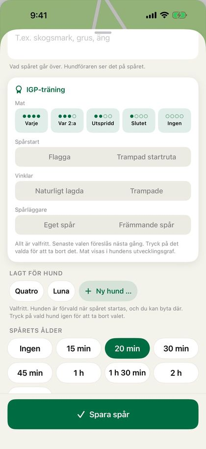
IGP-nivå: När du väljer ”IGP-spår” före start väljer du också nivå i menyn som visar nivån, till exempel ”IGP 1”: ”Fritt” (inga krav), IGP-V, IGP 1, IGP 2, IGP 3, FH 1, FH 2 eller FH 3. Kraven för nivån står överst i menyn. Medan spåret läggs visar panelen överst ”Steg” (t.ex. 212/300), föremålen och antalet steg sedan senaste vinkeln på sträckan du är på (”Sträcka 2”). Tryck på panelen för att se längden i meter. Kommer en vinkel mindre än 50 steg efter förra vinkeln, eller ligger ett föremål närmare än 20 steg från en vinkel, visas en varning överst på kartan. Vinklarna hittas med GPS:en och registreras först 5–20 meter efter vinkeln, så varningen kommer lite i efterhand. Efter ”Stopp” sätts spårets ålder till minst kravet för nivån. I spåröversikten visar kortet ”IGP-krav” en grön och röd checklista: längd, vinklar, avstånd mellan vinklarna, föremål, föremål bort från vinklar, korsningar med störspår (FH 2 och FH 3; ett störspår som korsar spåret på två ställen räknas som två, och har du använt ”Korsar här” är det de punkterna som räknas, se ”Störspår”), spårets ålder och arbetstid. Spårets ålder och arbetstid kontrolleras när spåret är spårat. Nivån kan bytas i menyn i kortet och står i PDF:en. Stegen räknas om från meter med steglängden under Inställningar › Karta och spår › ”Steglängd” (standard 0,75 m). Varningarna kan stängas av under Inställningar › Aviseringar › ”IGP-krav” (under ”Medan spåret läggs”).
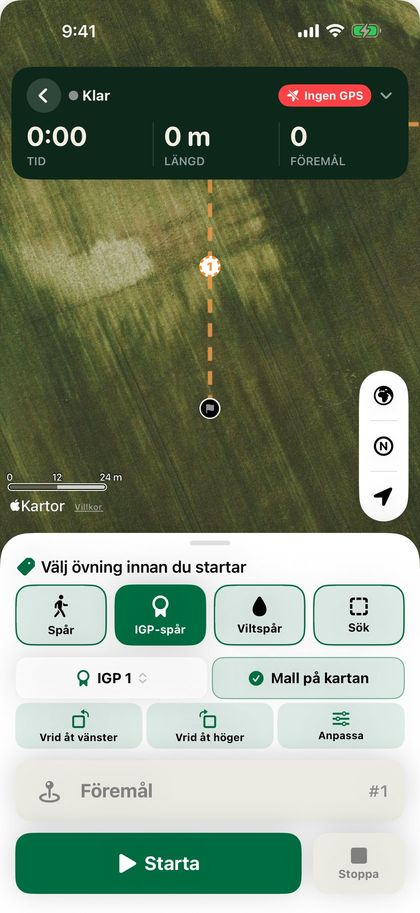
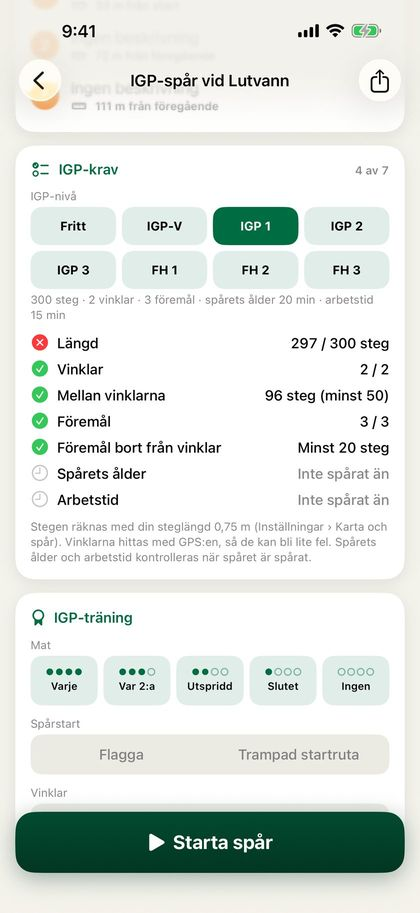
IGP-mall: Slå på ”Mall på kartan” bredvid nivåmenyn, så läggs en mall för nivån på kartan där du står, så snart GPS:en har hittat dig. Mallen visar sträckorna, vinklarna och var föremålen ska ligga, och pekar mot norr. Vrid den med ”Vrid åt vänster” och ”Vrid åt höger” på raden under, eller tryck och dra i ↻ på kartan direkt. Byter du nivå får du en ny mall för nivån på samma ställe. När du trycker på ”Start” flyttas mallen dit du står.
”Anpassa” på samma rad öppnar bladet ”Anpassa mallen”. Där ändrar du längden på varje sträcka i steg, och om varje vinkel går åt vänster eller höger. Bladet visar hur många steg mallen har totalt, och säger till om den blir kortare än kravet för nivån. Föremålen ligger mitt på sträckorna och det sista i slutet, minst 20 steg från vinklarna, och flyttar med när du ändrar sträckorna. ”Återställ” ger dig mallen för nivån igen.
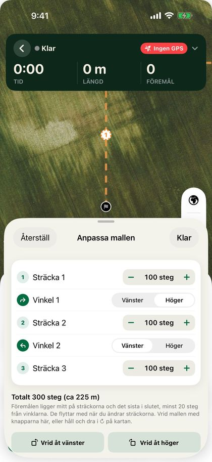
Medan du lägger spåret visar kortet överst på kartan vad som kommer, till exempel ”Vinkel åt höger om ca 20 steg” eller ”Lägg föremål 2 nu”, och hur långt du har kommit på sträckan, till exempel ”Sträcka 2 · 40 av 100 steg”. Före vinklar och föremål känner du en liten knuff, och med ”Läs upp aviseringar” på läses meddelandet upp. Knuffen och uppläsningen stänger du av under Inställningar › Aviseringar › ”Vägledning från IGP-mallen”. Kortet visas ändå.
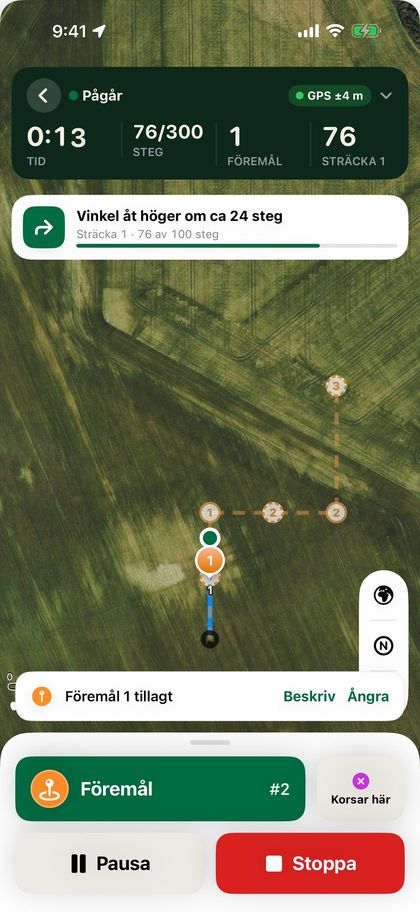
Tips: Mallen är ett riktmärke, inte facit. Stegen räknas från längden som GPS:en mäter, delad med din steglängd, och GPS:en kan slå fel med några meter. Gå efter terrängen och dina egna steg.
06
Sök: föremålssök och ytsök
Sök är egna övningar, inte spår. Du lägger en ruta eller en yta på kartan och lägger ut föremål eller figuranter, och hunden söker inom en tidsgräns.
- Tryck på ”Nytt spår” och sedan på ”Sök”. Välj ”Föremålssök” eller ”Ytsök”. Valet hamnar då på ”Sök”-knappens plats, och du kan trycka där igen för att byta.
- Rutan (eller ytan) läggs på kartan där du står, med startlinjen där du är. Om vädret har hämtats vänds den så att hunden skickas in mot vinden. Annars vetter den mot norr.
- Välj storlek i menyn till vänster: föremålssök har ”Ruta 50 × 50 m” och ”Korridor 10 × 50 m”, ytsök har ”Yta 100 × 100 m” och ”Yta 100 × 200 m”. Du kan också välja bredd och längd själv.
- Välj tidsgräns i menyn till höger. Standard är 15 minuter för föremålssök och 1 timme för ytsök. Valen sparas var för sig för föremålssök och ytsök.
- Justera placeringen med knapparna under: ”Vänd vänster” och ”Vänd höger” vrider rutan lite i taget, ”Mot vinden” vänder den mot vinden, och ”Starta här” flyttar startlinjen dit du står.
- Tryck på ”Starta” när rutan ligger rätt. Knapparna för storlek, tid och placering försvinner då.
- Gå in i rutan och tryck på ”Föremål” där varje föremål läggs. I ytsök finns också knappen ”Figurant” för att lägga ut en figurant där du står.
- Tryck på ”Stoppa” och spara som vanligt.
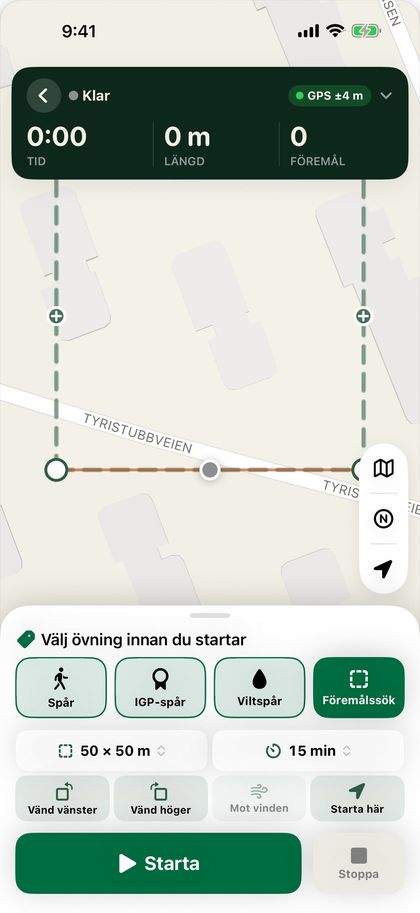
Rutan behöver inte vara fyrkantig. Dra i hörnen för att flytta dem, och dra i + mitt på en kant för att göra ett nytt hörn. Du behöver inte trycka på hörnet först, och rutan ritas om medan du drar. Tryck på ett hörn för att få fram papperskorgen som tar bort det. Hörnen på startlinjen kan inte tas bort. När formen är ändrad står det ”Egen form” i storleksmenyn, och ”Tillbaka till rektangel” i samma meny ångrar. Formen kan ändras ända tills du trycker på ”Stoppa”.
När hunden ska söka öppnar du söket från ”Redo att spåra” och trycker på ”Starta”. ”Okänt spår” är redan påslaget, eftersom föraren oftast inte vet var föremålen ligger (se ”Okänt spår”). Fältet högst upp visar tid kvar, använd tid och antal fynd. Telefonen varnar en minut innan tiden är ute och när tiden är ute, med vibration, och med tal om ”Läs upp aviseringar” är på. När tiden är ute står det ”Över tiden”, och tiden räknas vidare.
Tryck på ”Hittat” när hunden kommer med ett föremål eller markerar en figurant. Appen frågar vilket föremål hunden hittade, och tiden från att söket startade sparas med fyndet. Ditt avstånd spelar ingen roll, eftersom du oftast står vid rutan medan hunden söker. Sedan kan du välja markering: i föremålssök ”Ligg”, ”Sitt”, ”Stå”, ”Apport” eller ”Förbi”, och i ytsök ”Passiv markering”, ”Bringsel” eller ”Skallmarkering”, både för figuranter och föremål (se ”Registrera fynd”).
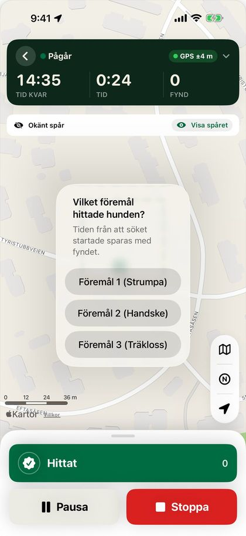
Sök har inga spåraviseringar, ingen avvikelseanalys och inga vinklar. På kartan är utläggarens rutt tunn och nedtonad, och i föremålssök visas inte förarens rutt.
Resultatet i spåröversikten visar rutans storlek, tidsgränsen, använd tid och varje fynd med tiden det tog, i den ordning hunden hittade dem. I ytsök räknas figuranter och föremål var för sig. Föremål som inte hittades står under.
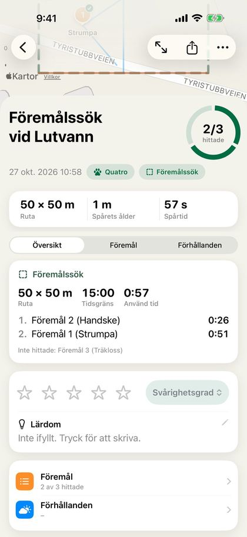
Tips: Föremålssök, ytsök och spår hålls alltid isär i statistiken. ”Alla spår” på sidan ”Avslutade spår” visar bara spår, och hundsidan visar ”Antal” för sök i stället för ”spår totalt”, utan ”på spåret”.
07
Föremål
- Stå där föremålet läggs och tryck på ”Föremål”. Föremålet sparas direkt, med nummer och position.
- Vill du lägga till en beskrivning, till exempel ”strumpa” eller ”träkloss”, trycker du på ”Beskriv” i meddelandet som visas.
- Tryckte du av misstag? Tryck på ”Ångra” i meddelandet.
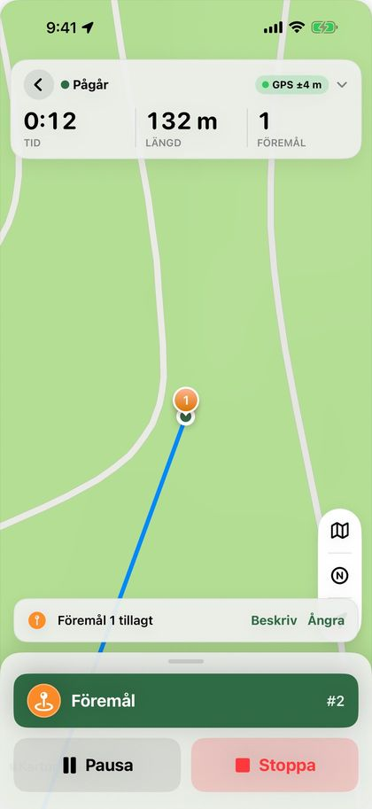
Föremålen numreras i den ordning du lägger ut dem. Du kan också skriva eller ändra beskrivningen senare i spåröversikten, under ”Föremål”.
Färg och ikon för föremålen väljer du under Inställningar › Karta och spår. Valet gäller alla kartor, även i PDF:en och på bilden för sociala medier.
Tips: Om telefonen inte har hittat din position än sparas inte föremålet. Vänta några sekunder tills spåret börjar ritas och försök igen.
08
Spara spåret
När du trycker på ”Stoppa” öppnas arket ”Spara spår”. Högst upp ser du längden, antal föremål och tiden.
- ”Spara spår” står fast längst ner i arket. Den sparar spåret och tar dig tillbaka till hemskärmen, där spåret finns under ”Redo att spåra”.
- ”Exportera” låter dig välja Trax-fil, GPX eller PDF. Välj ”Till en annan Trax-användare” för att skicka spåret till hundföraren, eller ”Till en annan Trax-användare, som okänt spår” om hundföraren inte ska se spåret (se ”Dela och ta emot spår”). När du är klar med exporten kommer du tillbaka till arket med allt du har fyllt i, och trycker på ”Spara spår”.
- ”Fortsätt spåret” tar dig tillbaka till kartan om du tryckte på ”Stoppa” för tidigt.
Du kan ge spåret ett namn. Om du lämnar fältet tomt får spåret namnet på platsen där det startade, datum och klockslag, till exempel ”Byneset 25 okt. 08:15”. Utan internet får det datum och klockslag i stället.
Under ”Underlag” kan du skriva vad spåret går över, till exempel skogsmark, grus eller äng. Hundföraren ser underlaget på spåret, även när du skickar det till en annan telefon.
Under ”Spårets ålder” trycker du på knappen för hur länge spåret ska ligga innan hunden spårar (se ”Spårets ålder”). På viltspår visas även korten ”Skottplats” och ”Blod och spårsko” (se ”Spårtyp och viltspår”).
Under ”Lagt för hund” kan du välja vilken hund spåret är lagt för. Det är valfritt, och ”Ingen hund” är standard. Hundarna visas som knappar, och vald hund är grön. Tryck på vald hund igen för att ta bort valet, eller på ”Ny hund …” för att lägga till en hund. Hunden visas på kortet under ”Redo att spåra” och som märket ”För …” i spåröversikten, där du också kan ändra den. När spåret startas är hunden redan vald, men du kan byta. Hunden följer med när du skickar spåret som Trax-fil, och kopplas till hunden med samma namn hos mottagaren.
Under ”Träningsmoment” väljer du vad spåret ska träna på (se ”Träningsmoment”).
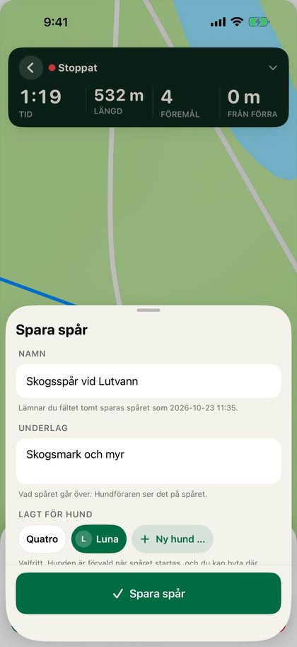
09
Spårets ålder
Spårets ålder är tiden från att du började lägga spåret tills hundföraren startar spåret. Den räknas upp av sig själv och visas både medan spåret väntar och under spårningen. När spåret har spårats låses åldern och sparas med spåret.
Vill du få besked när spåret har legat tillräckligt länge väljer du spårets ålder med knapparna i arket ”Spara spår”: ”Ingen”, 15, 30, 45, 60 eller 90 minuter, 2 timmar, eller ”Egen …” med timmar och minuter (högst 48 timmar). Ditt senaste val sparas. På viltspår är valen 30 minuter och 1, 2, 3, 6, 12, 18 och 24 timmar, och viltspår kommer ihåg sitt eget val.
Första gången frågar telefonen om Trax får skicka notiser. Fem minuter innan tiden är ute får du notisen ”Spåret ”…” är klart om 5 min (spårets ålder 30 min). Gör hunden redo.” Låsskärmen och Dynamic Island räknar ner och visar sedan ”Spåret är klart” med spårets ålder tills spåret startas. Tryck på notisen eller nedräkningen för att öppna spåret.
Om spårets ålder är över 8 timmar visas ingen nedräkning på låsskärmen, bara notisen innan spåret är redo.
För spår som väntar visar spåröversikten spårets ålder stort, med målet och hur långt den har kommit. Tryck på kortet för att ändra spårets ålder eller välja ”Ingen”. Notisen och nedräkningen försvinner när spåret startas eller raderas.
Tips: Notisen är tidskänslig och kommer igenom fokuslägen som Sömn när ”Tidskänsliga notiser” är på för Trax. Om notiser är avstängda för Trax säger kortet till, med en knapp till Inställningar.
10
Störspår
Ett störspår är ett färskare spår som korsar huvudspåret, för att träna hunden att hålla sig på rätt spår.
- Lägg huvudspåret som vanligt och spara det.
- Öppna spåret från ”Redo att spåra” på hemskärmen och tryck på ”Lägg störspår” i kortet ”Störspår”.
- Huvudspåret visas svagt på kartan. Tryck på ”Starta” och gå tvärs över huvudspåret. ”Pausa” och ”Stoppa” fungerar som när du lägger ett vanligt spår, men störspår har inga föremål.
- Tryck på ”Stoppa”. Du kan ange vem som lade störspåret under ”Lagt av”. Tryck sedan på ”Spara störspår”.
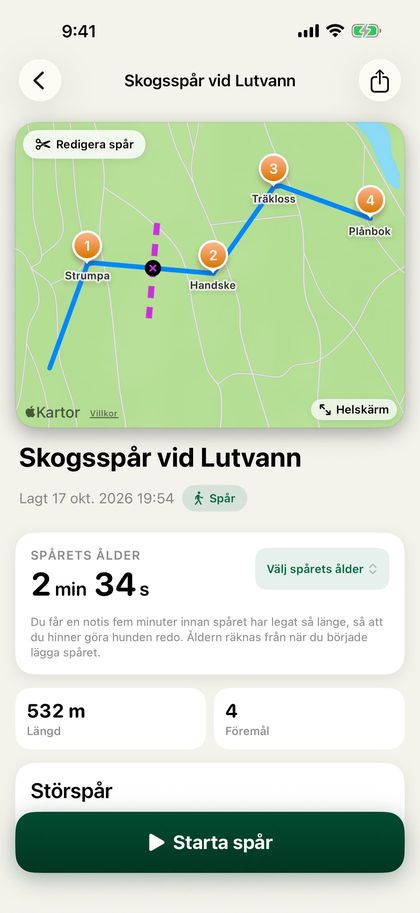
Störspår visas streckade i en egen färg, med ett litet kryss där de korsar huvudspåret. Kortet visar längden och störspårets egen ålder. Du kan lägga flera störspår och radera ett med papperskorgen innan hunden spårar. Föremålssök och ytsök har inga störspår.
”Korsar här”: När du lägger ett IGP-spår finns knappen ”Korsar här” bredvid ”Föremål”. Tryck på den där störspåret ska gå över spåret, till exempel där du sätter en spårflagga. Punkten räknas som en korsning i ”IGP-krav” (FH 2 och FH 3), inte som ett föremål, och visas med ett korsmärke på kartan, även medan du lägger störspåret. När du har använt ”Korsar här” är det de punkterna som räknas och ger avisering, inte korsningarna appen hittar med GPS:en. Korsningarna står i kortet ”Störspår” och kan raderas medan spåret väntar.
När hunden spårar aviserar appen 12 meter före varje korsning med ”Korsande störspår” (se ”Aviseringar och röstaviseringar”). Störspåren visas också vid uppspelning, i PDF:en och på bilden för sociala medier, och följer med när du skickar spåret. På okänt spår är de dolda tills spåret stoppas.
11
Spåra
Som hundförare följer du hunden när den spårar. Spårläggarens rutt och föremålen visas på kartan, och din egen rutt ritas i en annan färg.
- Tryck på ”Starta” på spåret under ”Redo att spåra” på hemskärmen. Du kan också öppna spåret och trycka på ”Starta spår” längst ner.
- Välj hunden som ska spåra. Hundarna visas som knappar, och vald hund är grön. Är spåret lagt för en hund, eller har du bara en hund, är den redan vald. ”Ny hund …” sist lägger till en ny hund och väljer den direkt. Har du inte registrerat några hundar kan du starta utan hund.
- Vill du spåra utan att se spåret slår du på ”Okänt spår” (se ”Okänt spår”).
- Tryck på ”Starta”.
- Följ hunden. Använd ”Pausa” och ”Fortsätt” vid behov.
- Tryck på ”Hittat” när hunden markerar ett föremål.
- Håll in ”Stoppa” när spåret är klart.
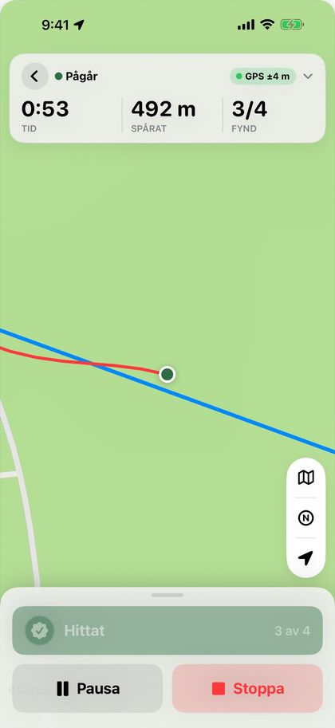
Innan du startar visar fältet högst upp hur gammalt spåret är, hur långt det är och hur många föremål det har. Under spårningen visar det tid, hur långt ni har spårat och hur många föremål som har hittats. Tryck på fältet för att se spårets ålder. Om GPS-signalen är svag visas samma ruta som när du lägger ett spår.
När du trycker på ”Starta” zoomar kartan in på dig, till samma vy varje gång. Kartan följer dig under spårningen, och om du zoomar in eller ut behåller kartan den zoom du valde. Kartmenyn överst bland kartknapparna har vanlig karta, topo (bara i Norge), satellit och nattläge, och N-knappen växlar mellan norr uppåt och en karta som vrider sig efter din riktning. Pilen ovanför kartknapparna visar vinden när hunden startade spåret.
Om du kommer för långt från det lagda spåret vibrerar telefonen och kortet ”Tappat spåret” visas högst upp med hur långt bort du är. Kortet försvinner när du är tillbaka på spåret, eller när du trycker på krysset. Läs mer om detta och de andra aviseringarna i ”Aviseringar och röstaviseringar”.
Registreringen fortsätter när skärmen är låst eller du byter app. Spåret visas på låsskärmen och i Dynamic Island, och på låsskärmen kan du trycka på ”Pausa”, ”Fortsätt” och ”Hittat”.
Om du trycker på bakåtpilen efter att du har startat frågar appen ”Avsluta hundens spår?”. Du kan stoppa och spara, pausa spåret eller välja ”Släng hundens spår”. Ett pausat spår fortsätter när du öppnar spåret igen. ”Släng hundens spår” raderar bara det ni har spårat. Spåret som lades finns kvar under ”Redo att spåra”.
Om appen stängs mitt under ett spår, till exempel för att telefonens batteri tog slut, har spåret sparats löpande. Spåret finns under ”Redo att spåra” med ”Spåret pågår”. Öppna spåret och tryck på ”Fortsätt”, så fortsätter spåret från paus. Tiden som appen var stängd räknas inte in i tidsåtgången.
12
Okänt spår
Spåra utan att se var spårläggaren gick, som på prov.
Slå på ”Okänt spår” innan du trycker på ”Starta”. Reglaget är avstängt när du öppnar spåret, så du slår på det varje gång. Har spåret skickats till dig som okänt spår är det redan på (se ”Dela och ta emot spår”).
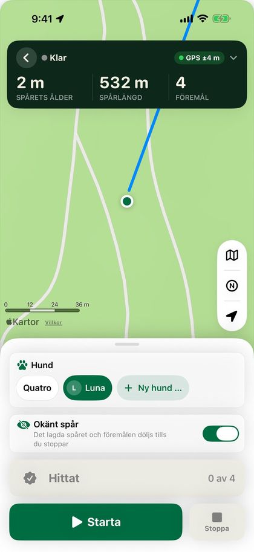
- Det lagda spåret, föremålen, blodavbrotten, störspåren och vinklarna är dolda på kartan tills du trycker på ”Stoppa”. Starten visas som en grön droppe med orange tass, och skottplatsen och flyktriktningen på viltspår visas ändå.
- Du får inga aviseringar under spårningen, varken om föremål, blodavbrott, tappat spår eller korsande störspår, och föremål läses inte upp.
- Fältet högst upp visar bara hur många föremål som har hittats, inte hur många det finns.
- ”Hittat” registrerar närmaste föremål, oavsett hur långt bort det är.
Om du behöver se spåret, till exempel för att ni har kommit vilse, trycker du på ”Visa spåret”. Då visas allt, och spåret räknas inte längre som okänt.
Spåröversikten och PDF:en visar ”Okänt spår”, och när spåret visades om du tryckte på ”Visa spåret”.
13
Nattläge
Tränar du i mörker gör nattläget skärmen mörk och röd, så att ditt mörkerseende inte förstörs.
- Tryck på den översta kartknappen till höger på kartan medan du lägger spår eller spårar.
- Slå på ”Nattläge” i menyn.
- Stäng av det på samma sätt.
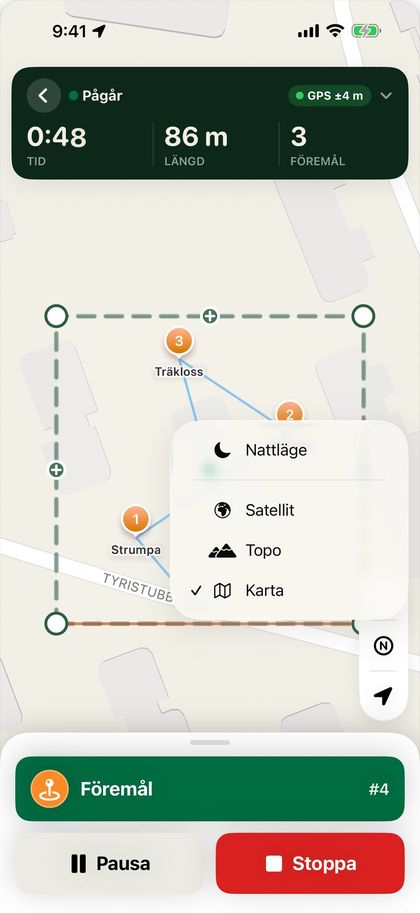
Nattläget gör hela skärmen röd och mörk: kartan, fältet högst upp och knapparna. Spåret, positionsprickan och knapparna visas i ljusrött, så att de syns bra. Valet sparas till nästa gång du lägger spår eller spårar. Resten av appen ser ut som vanligt.
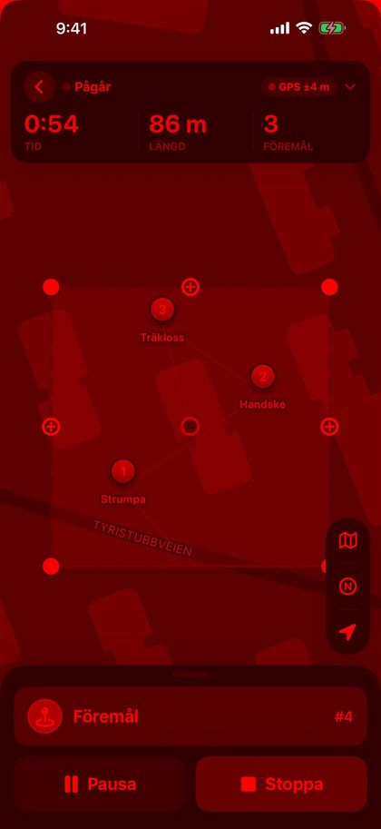
Tips: Sänk gärna ljusstyrkan på telefonen också. Nattläget ändrar färgerna, inte hur starkt skärmen lyser.
14
Registrera fynd
När du kommer inom valt avstånd från ett föremål (12 meter som standard) visas en banner med nummer, beskrivning och avstånd. Telefonen vibrerar, även med låst skärm. Om GPS:en är osäker väntar appen med aviseringen tills positionen är bättre. Du väljer avstånd och aviseringstyp under Inställningar › Aviseringar (se ”Aviseringar och röstaviseringar”).
- Tryck på ”Markera som hittat” i bannern, eller på den stora ”Hittat”-knappen längst ner. Välj ”Senare” om du vill vänta.
- Om du inte trycker på något stängs bannern av sig själv när du har kommit en bit förbi föremålet (25 meter, eller dubbla valda avståndet om det är längre), eller när du närmar dig nästa föremål. Föremålet registreras då inte som hittat, men du kan bocka av det när du stoppar.
- ”Hittat” kan bara tryckas när du är inom valt avstånd från ett föremål som inte har hittats än, både i appen och på låsskärmen. Om ingen banner visas registreras det närmaste.
- Tryckte du av misstag? Tryck på ”Ångra” i meddelandet som visas längst ner.
Vill du att fynden ska registreras av sig själva slår du på ”Registrera fynd automatiskt” under Inställningar › Karta och spår › Fynd. Föremålet registreras då som hittat när du har varit inom ”Avstånd till föremål” (3, 5, 8 eller 12 meter, 5 meter som standard) med bra GPS-signal. Telefonen vibrerar, och du kan trycka på ”Ångra” direkt. När du stoppar kan du rätta hittade och inte hittade. Det gäller inte okänt spår och sök.
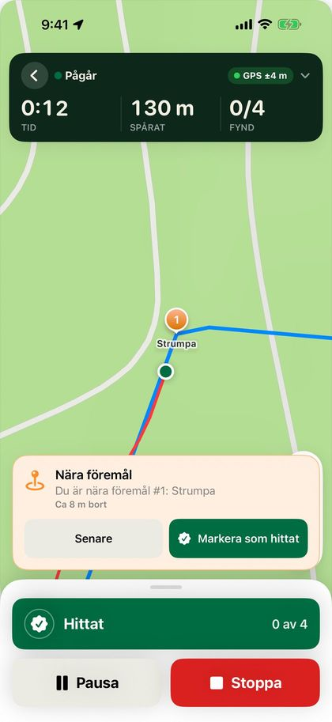
När du stoppar visar arket ”Spåret är klart” en lista över föremålen. Fynd som du registrerade under spårningen är redan avbockade. Rätta till om något saknas.
Rätta fynd i efterhand: Hittade hunden ett föremål som inte registrerades kan du rätta det efter att spåret har sparats. Öppna spåret, gå till fliken ”Föremål” och tryck på föremålet. Under ”Resultat” väljer du ”Hittat” eller ”Ej hittat”, och markering om det hittades. Du kan också hålla fingret på föremålet och välja ”Markera som hittat” eller ”Markera som ej hittat”. Antal fynd, hundsidan, PDF:en och bilden för sociala medier uppdateras direkt.
Markering: På spår, IGP-spår och föremålssök har meddelandet efter ”Hittat” fem knappar: ”Ligg”, ”Sitt”, ”Stå”, ”Apport” och ”Förbi” (hunden gick förbi och du visade föremålet). I ytsök är valen ”Passiv markering”, ”Bringsel” och ”Skallmarkering”, både för figuranter och föremål. Tryck på den som passar, eller låt bli. Meddelandet visas i cirka 10 sekunder. Fynd från låsskärmen och fynd som registrerats automatiskt kan få markering när du stoppar. I spåröversikten står markeringen efter ”Hittat” på varje föremål, med en sammanfattning överst i kortet. Tryck på ett föremål för att ändra den. Markeringen finns också i PDF:en, och hundens utvecklingsgraf har valet ”Markering” under ”Mer”, med en stapel per spår.
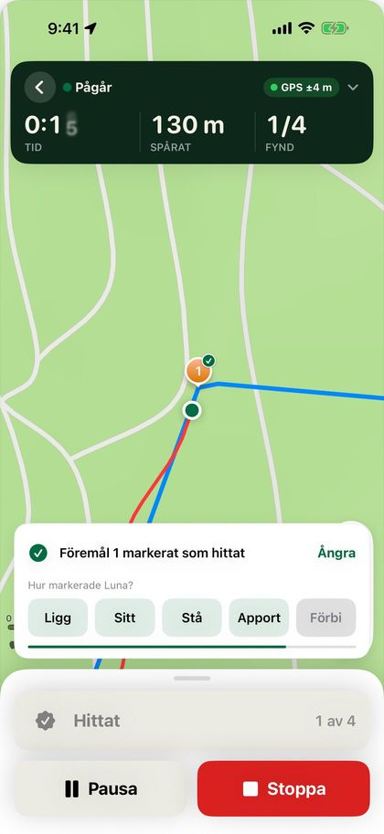
Falsk markering: På IGP-spår finns en egen knapp, ”Falsk markering”, bredvid ”Hittat”. Tryck på den när hunden markerar där det inte ligger något. Tid och position sparas, och ett rött märke visas på kartan. Tryckte du fel? Tryck på ”Ångra” i meddelandet, eller ”Ta bort” när du stoppar. Falska markeringar visas i spåröversikten, i PDF:en och som röda siffror i grafen ”Markering”.
I samma ark kan du ge spåret en bedömning (se ”Bedömning och vinklar”) och skriva anteckningar, till exempel om förhållandena eller hur hunden arbetade. Anteckningarna kommer med i PDF:en. Om spårläggaren inte fyllde i underlaget kan du göra det här. Tryck på ”Spara” när du är klar.
”Exportera” i samma ark delar spåret som Trax-fil, GPX eller PDF direkt. Efteråt kommer du tillbaka till arket med allt du har fyllt i. Vill du visa upp spåret trycker du på ”Dela på sociala medier” (se ”Dela på sociala medier”).
Tips: Vill du spåra utan aviseringar och utan att se det slår du på ”Okänt spår” innan du startar (se ”Okänt spår”).
15
Aviseringar och röstaviseringar
Medan hunden spårar kan telefonen avisera dig med vibration, ljud och röst. Alla aviseringar ställs in under Inställningar › Aviseringar.
- ”Föremål i närheten”: när du är inom ”Avstånd till föremål” (5–50 meter, 12 meter som standard). På viltspår gäller det sårbäddar och vilt.
- ”Blodavbrott” och ”Blod igen” (viltspår): innan du kommer fram till ett blodavbrott, och innan blodet börjar igen efter det. Välj avståndet under ”Avstånd till blodavbrott” (20 meter som standard).
- ”Tappat spår”: när du har varit längre från det lagda spåret än ”Avstånd från spåret” en stund (5–30 meter, 15 meter som standard). Appen aviserar inte förrän du har varit på spåret en gång.
- ”Korsande störspår”: 12 meter före varje ställe där ett störspår korsar spåret, eller där spårläggaren tryckte på ”Korsar här”. Korsningar som ligger nära varandra ger en avisering.
- ”IGP-krav” (medan spåret läggs): när en vinkel kommer mindre än 50 steg efter förra vinkeln, eller ett föremål läggs närmare än 20 steg från en vinkel. Gäller IGP-spår med vald nivå (se ”Spårtyp och viltspår”).
- ”Vägledning från IGP-mallen” (medan spåret läggs): en liten knuff före vinklar och föremål när du lägger spåret efter en mall, och uppläsning när ”Läs upp aviseringar” är på.
Alla dessa är på som standard. Huvudreglaget ”Aviseringar” högst upp slår på och av alla aviseringar, även röstaviseringarna. Aviseringarna visas också på låsskärmen. På okänt spår ges inga aviseringar. Ändringar för blodavbrott, tappat spår och korsande störspår gäller från nästa gång du startar ett spår.
Sidan är indelad i fyra grupper: ”Medan hunden spårar” (föremål i närheten, tappat spår och korsande störspår), ”Viltspår” (blodavbrott och blod igen), ”Medan spåret läggs” (IGP-krav) och ”Ljud och tal” (aviseringstyp och uppläsning av sträckan).
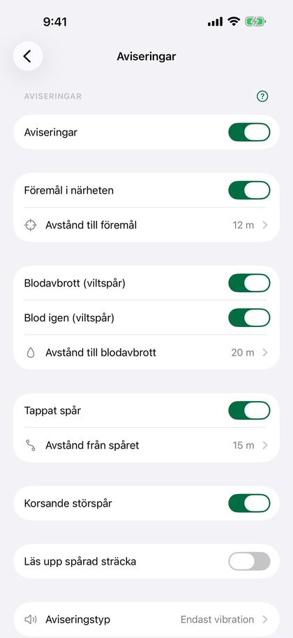
Under ”Aviseringstyp” väljer du ”Endast vibration” eller ”Vibration och ljud”. Ljudet spelas bara när telefonen inte är på ljudlös eller i Stör ej.
Röstaviseringar: slå på ”Läs upp aviseringar” under ”Aviseringstyp”. Då läser telefonen upp alla aviseringar som du har slagit på, till exempel ”Föremål 3, cirka 11 meter bort”, ”Blodavbrott om 20 meter” eller ”Tappat spår, cirka 18 meter från spåret”. Tryck på ”Spela upp exempel” för att höra rösten. Röstaviseringarna hörs i AirPods eller högtalaren, även med låst skärm och när telefonen är på ljudlös. Musik sänks medan meddelandet läses upp.
Om du slår på ”Läs upp spårad sträcka” under Aviseringar läser telefonen också upp hur långt ni har spårat, till exempel ”300 meter spårat”. Under ”Hur ofta” väljer du var 100:e, 200:e eller 500:e meter, eller varje km. Detta gäller bara när ”Läs upp aviseringar” är på.
Tips: Med AirPods i öronen hör du röstaviseringarna utan att ta fram telefonen, och hunden störs inte av ljud från högtalaren.
16
Spåröversikten
Tryck på ett spår på hemskärmen för att se allt om det.
- Kartan överst visar båda rutterna och alla föremål, med spåret mitt i kartan. Du kan dra och zooma i kartan. Tryck på kartan, eller på helskärmsknappen överst, för en större karta. I helskärm växlar kartknappen nere till höger mellan karta, topo och satellit. Helskärm öppnas alltid med vanlig karta.
- På avslutade spår ligger uppspelningsraden längst ner i kartan, så du kan spela upp spåret där (se ”Spela upp spåret”). Märket uppe till vänster på kartan visar färgerna för avvikelsen och gränsen. Tryck på det för att ändra gränsen (se ”Avvikelse från spåret”).
- Har spåret en bild finns en liten bild av den uppe till höger på kartan. Tryck på den för att se bilden, och på ”Karta” för att gå tillbaka (se ”Dela på sociala medier”).
- Knapparna överst är helskärm, delningsknappen och ⋯. Delningsknappen exporterar spåret som Trax-fil, GPX eller PDF, och skapar bilden för sociala medier för avslutade spår. ⋯ har ”Byt namn”, ”Redigera spår”, ”Spela upp spåret” och ”Radera spår”.
- Under kartan står titeln, och på avslutade spår fynden i en ring, till exempel 4/4. Nyckeltalen står på en rad: längden, spårets ålder, tiden och hur stor del av din rutt som var på spåret. För sök visas rutans storlek i stället för längden.
- Hunden och spårtypen visas som märken under titeln. Spårade du med fel hund, eller glömde att välja hund? Tryck på hundmärket och välj en annan hund eller ”Ingen hund”, eller ”Ny hund …” för att lägga till en. Medan spåret väntar visar märket ”För …” hunden som spåret är lagt för. Tryck på det för att ändra eller ta bort hunden.
- Avslutade spår har flikarna ”Översikt”, ”Avvikelse”, ”Föremål” (”Viltspår” på viltspår) och ”Förhållanden”. Flikarna fastnar överst när du skrollar. Sök har ingen flik för avvikelse.
- ”Översikt” har IGP-kraven på IGP-spår och resultatet för sök, ”Bedömning” och ”Träningsmoment”, och en rad för var och en av de andra flikarna med en kort sammanfattning, till exempel ”4 av 4 hittade”. Tryck på en rad för att gå till fliken. Längre ner står anteckningen, ”Spårtyp” och ”Detaljer”.
- ”Avvikelse” har kortet ”Avvikelse från spåret”, grafen ”Avvikelse längs spåret” och kortet ”Hundens spår” (se ”Avvikelse från spåret” och ”Hundens spår från GPS-halsband”).
- ”Föremål” visar varje föremål med beskrivning och resultat, och hur många meter det ligger från start och från förra föremålet. Tryck på ett föremål för att skriva eller ändra beskrivningen, eller för att rätta om det hittades (se ”Registrera fynd”). På viltspår heter fliken ”Viltspår”. Där finns kortet ”Sårbäddar, vilt och blodavbrott”, och även skottplatsen och blod och spårsko.
- ”Förhållanden” har ”IGP-träning” på IGP-spår, vädret, underlaget och störspåren.
- På kartan får hittade föremål en liten grön bock i hörnet och behåller sin färg och symbol, så att du ser om det var en sårbädd eller vilt. Föremål som inte hittades är grå. Hundförarens rutt är färgad efter hur långt från spåret den gick (se ”Avvikelse från spåret”), och i IGP-spår visar små numrerade cirklar vinklarna (se ”Bedömning och vinklar”).
- Spår som väntar har samma karta och titel, men inga flikar. Under titeln står spårets ålder med nedräkning och nyckeltalen längd, föremål och väder. Korten ligger på en sida som skrollar, och ”Starta spår” står fast längst ner på skärmen. Här finns också kortet ”Störspår” (se ”Spårets ålder” och ”Störspår”).
- ”Detaljer” visar ”Spårläggning startad”, ”Spårläggning klar”, ”Spårning startad” och ”Spårning klar”, antal vinklar (IGP-spår) och om spåret spårades som okänt spår. Tryck på ”Byt namn” för att ge spåret ett nytt namn.
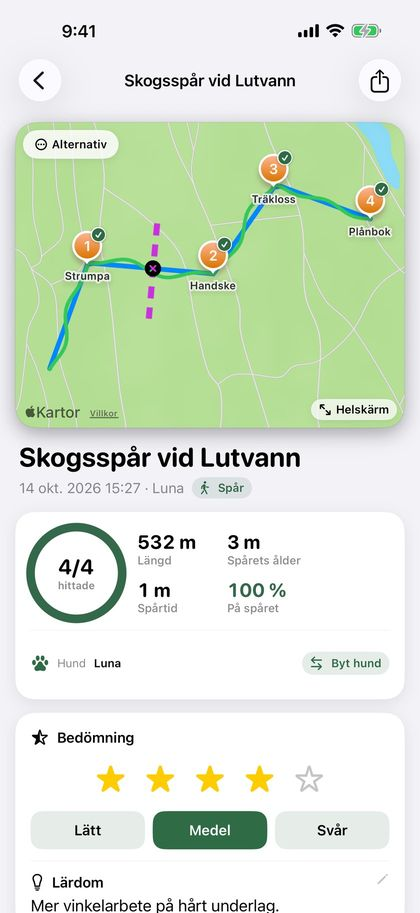
17
Bedömning och vinklar
Ge varje spår en bedömning och se hur många vinklar IGP-spåret hade.
Kortet ”Bedömning” finns i arket ”Spåret är klart” och på fliken ”Översikt” i spåröversikten. Allt är valfritt:
- ”Betyg”: 1 till 5 stjärnor.
- ”Svårighetsgrad”: ”Lätt”, ”Medel” eller ”Svår”.
- ”Lärdom”: en rad om vad som gick bra, eller vad som behöver tränas mer.
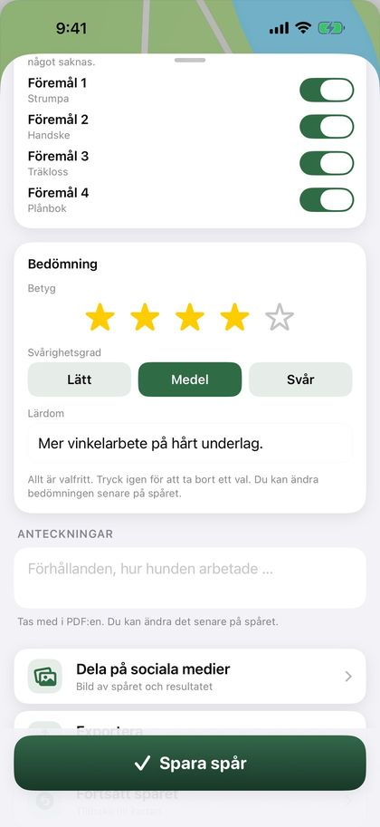
Tryck igen på vald stjärna eller svårighetsgrad för att ta bort valet. I spåröversikten är svårighetsgraden en liten menyknapp på samma rad som stjärnorna. Tryck på stjärnorna för att ändra betyget, på menyknappen för att välja grad eller ”Inget”, och på lärdomen för att skriva den.
Hundens utvecklingsdiagram har valet ”Betyg”, med punkterna färgade efter svårighetsgrad: grönt är lätt, orange medel och rött svårt. PDF:en visar betyg och svårighetsgrad, och lärdomen som en egen del. Hundrapporten har snittbetyget på försättsbladet. Bedömningen följer med när du skickar spåret som Trax-fil.
Vinklar: I IGP-spår räknar Trax själv vinklarna i det lagda spåret, där spåret svänger minst 45 grader. Små krökar och GPS-brus räknas inte. ”Detaljer” i spåröversikten visar ”Vinklar”, och kartan har små numrerade cirklar vid varje vinkel. PDF:en har raden ”Vinklar i spåret”. Andra spårtyper får inga vinklar. Spår under 30 meter får inte heller några vinklar, och på ett okänt spår är de dolda tills spåret stoppas.
18
Träningsmoment
Välj vad spåret ska träna på, och bedöm varje moment när spåret är spårat.
Kortet ”Träningsmoment” finns i bladet ”Spara spår” när spåret är lagt, under spårets ålder. Första gången är listan tom. Tryck på ”Nytt moment”, skriv ett namn, till exempel ”Spetsig vinkel” eller ”Föremål i brant backe”, och tryck på ”Lägg till”. Momentet väljs direkt och sparas till nästa spår. Tryck på ett moment för att välja det eller ta bort valet.
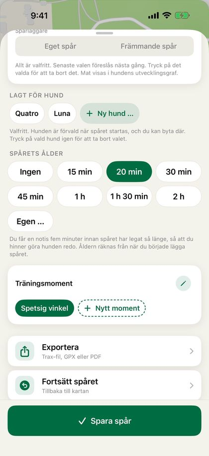
Vill du rensa i listan trycker du på pennan uppe till höger i kortet. Varje moment får då ett rött kryss som raderar det från listan. Tryck på ”Klar” när du är färdig. Spår som redan har momentet behåller det.
När spåret är spårat bedömer du varje valt moment som ”Bra”, ”Medel” eller ”Dålig” i bladet ”Spåret är klart”, ovanför ”Bedömning”. Tryck en gång till för att ta bort ett val. Kortet visas bara när spårläggaren valde moment.
I spåröversikten kan du välja moment så länge spåret väntar, och bedöma dem när det är spårat. Valdes inga moment innan spåret spårades visas inte kortet. På spår som skickats som okända spår är momenten dolda tills spåret är spårat.
På hundsidan visar rutan ”Träningsmoment” en stapel per moment, till exempel ”7 av 9 bra”. Rutan visas bara när hunden har bedömda moment (se ”Hundar”).
Momenten finns i PDF:en, följer med när du skickar spåret som Trax-fil och ingår i säkerhetskopian. Föremålssök och ytsök har inga träningsmoment.
19
Spela upp spåret
Se hur hunden arbetade, ovanpå spåret som spårläggaren lade.
- Öppna ett avslutat spår. Uppspelningsraden ligger längst ner i kartan överst på sidan.
- Tryck på den gröna uppspelningsknappen. En grön droppe med orange tass visar var du och hunden var, och rutten ritas upp efter hand.
- Dra i tidslinjen för att hoppa framåt eller bakåt. Märkena på tidslinjen visar fynden och var ni tappade spåret, och bredvid står tiden.
- Tryck på hastighetsknappen för att spela upp 5, 10, 30 eller 60 gånger snabbare än verklig tid.
Vill du ha en större karta trycker du på helskärmsknappen överst, eller väljer ”Spela upp spåret” i ⋯-menyn. Uppspelningen i helskärm fortsätter där den var på kartan.
Föremålen får en grön bock när de hittas. På äldre spår, där tidpunkten för fyndet inte sparades, hittas föremålet där hunden var som närmast det.
20
Hundens spår från GPS-halsband
Har hunden GPS-halsband, till exempel från Garmin eller Tractive? Lägg till GPX-filen från halsbandet, så ser du var hunden gick i förhållande till dig och spåret.
- Exportera turen som GPX-fil från halsbandet eller halsbandets app, och spara den i Filer eller skicka den till telefonen med AirDrop.
- Öppna det avslutade spåret, gå till fliken ”Avvikelse” och tryck på ”Lägg till hundens spår” i kortet ”Hundens spår”. För sök finns kortet på ”Översikt”. Välj GPX-filen.
- Har filen flera hundar väljer du vem som spårade. Hunden med samma namn som på spåret står överst.
Du kan också öppna GPX-filen direkt från Filer eller AirDrop. Passar tiderna i filen med ett spår du har spårat, frågar Trax ”Är det här hundens spår?”. Tryck på ”Lägg till hundens spår”, eller ”Importera som nytt spår” om filen är ett vanligt spår.
Trax använder bara den del av filen som är från när du spårade, med två extra minuter i varje ände. Resten av turen tas inte med. Filen måste vara från samma spår: passar inte tiderna får du veta det.
Har spåret ingen hund, och hunden i filen heter samma sak som en av dina hundar i Trax, får spåret den hunden. Då hamnar det under rätt hund i ”Avslutade spår”. En hund du redan har valt byts aldrig ut.
Kortet ”Hundens spår” visar längden på hundens spår och hur långt hunden som mest var från dig. Med ”Visa på kartan” döljer eller visar du hundens linje. ”Byt” väljer en ny fil, och ”Ta bort” raderar hundens spår utan att röra resten av spåret.
I ”Spela upp spåret” visas hunden som en orange droppe med grön tass och du som en grön droppe med en gående figur, och under tidslinjen står hur långt hunden var från dig just då. Hundens spår finns också på kartan i PDF:en och följer med när du skickar spåret till en annan Trax-användare.
Tips: Saknar filen tider visas hundens spår på kartan, men inte i uppspelningen.
21
Redigera spår
Klipp bort början eller slutet av ett spår, till exempel en lång svans för att du glömde att trycka på ”Stoppa”.
- Öppna spåret, tryck på ⋯ överst och välj ”Redigera spår”.
- Har spåret både spårläggarens och hundförarens spår väljer du överst vilket du vill klippa. Du kan klippa båda innan du sparar.
- Dra i handtagen under kartan: det vänstra är ny start, det högra nytt slut. Det som klipps bort blir grått på kartan. Använd pilarna för att flytta en punkt i taget.
- Tryck på ”Spara”. Längd, tid och spårets ålder räknas om, och avvikelsen från spåret uppdateras också.
Finns det föremål eller fynd i delen som klipps bort frågar appen om de ska flyttas till närmaste punkt eller tas bort. Ett fynd som tas bort räknas som ej hittat.
Viktigt: Klippningen kan inte ångras när du har sparat. Punkterna som klipps bort raderas.
22
Avvikelse från spåret
Se hur väl du och hunden följde spåret som spårläggaren lade.
Kortet ”Avvikelse från spåret” finns på fliken ”Avvikelse” i spåröversikten för avslutade spår. Det visar:
- Hur stor del av din rutt som låg inom gränsen för ”på spåret”.
- ”Tappade spåret”: hur många gånger hundföraren var utanför gränsen i minst 20 meter i följd (eller dubbla gränsen om det är längre), och hur långt in i spåret det hände första gången.
- Genomsnittlig avvikelse och största avvikelse.
Under kortet visar grafen ”Avvikelse längs spåret” hur långt föraren var från det lagda spåret under spårningen. Märkena längst ner visar när föremålen hittades.
Gränsen väljer du med knappen uppe till höger i kortet, eller med märket överst på kartan: 5, 10, 15, 20 eller 30 meter. Standard är 15 meter. Valet sparas och gäller även PDF:en och ”på spåret” på hundsidan. Aviseringen om tappat spår under spårningen har en egen gräns under Inställningar › Aviseringar.
På kartan, i helskärm och vid uppspelning är hundförarens rutt färgad: grön inom gränsen, orange upp till dubbla gränsen och röd längre bort. Medan hunden spårar används fortfarande färgen du har valt under Inställningar › Karta och spår.
Tips: Avvikelsen mäts från hundförarens GPS-spår, inte hundens. GPS:en slår ofta fel med några meter, så små avvikelser betyder lite.
23
Väder
Trax hämtar vädret på platsen där spåret startade, för tidpunkten du startade: temperatur, vind och vindriktning, nederbörd och luftfuktighet. När hunden startar spåret hämtas vädret på nytt, eftersom vinden kan ha vänt eller ökat medan spåret åldrades. Väderdata sparas tillsammans med spåret och finns med i PDF-exporten, i kolumnerna ”Lagt” och ”Spårat”.
Medan spåret läggs och medan hunden spårar visar en liten pil på kartan, ovanför kartknapparna, vart vinden blåser och styrkan i m/s. Pilen pekar dit vinden blåser, alltså dit vittringen går, och vrider sig med kartan. Tryck på pilen för att se till exempel ”Vind från SV, 4 m/s”. Vinden hämtas bara vid start och uppdateras inte under tiden. Pilen finns också med på kartan i PDF:en och på bilden för sociala medier.
Saknar ett spår väderdata, till exempel för att du var utan täckning, trycker du på ”Hämta väder” i väderkortet i spåröversikten (på avslutade spår under fliken ”Förhållanden”). Det kräver internet.
Väderdata kommer från Apple Väder. Under väderkortet hittar du Apple Väder-märket och en länk till Apples lista över andra datakällor.
24
Dela på sociala medier
Visa upp spåret: Trax gör en bild med spåret, längden, spårets ålder och fynden, gärna ovanpå en bild på dig och hunden.
- När hunden har spårat ett spår trycker du på ”Dela på sociala medier” i arket ”Spara spår”. Äldre spår delar du med delningsknappen överst i spåröversikten.
- Välj utseende med de små förhandsvisningarna överst. ”Spår och siffror”, ”Bara spåret”, ”Lista” och ”Bara siffror” visar spåret och siffrorna i vitt, som i Strava. ”Karta” visar spåret på kartan med logga och datum överst och en mörk panel nederst, och där väljer du ”Satellit” eller ”Vanlig karta”. ”Polaroid”, ”Delad”, ”Glaskort”, ”Magasin” och ”Märke” är färdiga layouter med bild, spår och siffror.
- Välj ”Story (9:16)” eller ”Inlägg (4:5)”.
- Tryck på ”Ta bild” eller ”Välj bild” för att lägga spåret ovanpå en bild på dig och hunden. Utan egen bild blir bakgrunden grön. ”Ta bort bilden” tar bort den igen.
- Välj färg för ”Spårläggare”, ”Hundförare” och ”Föremål”. Det finns 11 färger, och regnbågsprickan sist i raden öppnar färgväljaren för en egen färg. ”Kontrastkant” lägger en tunn kant runt spåren, så att de syns på alla bakgrunder.
- Tryck på ”Dela bilden” och välj Instagram, Facebook, Snapchat eller en annan app, eller ”Spara bild” för att spara den i Bilder.
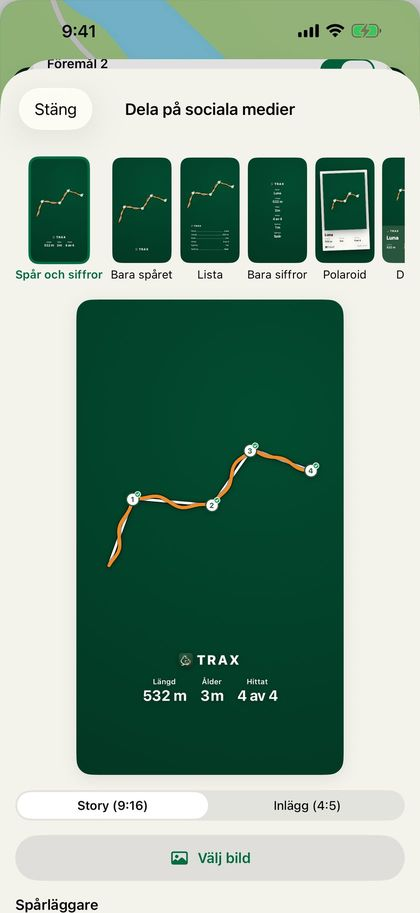
På föremålssök visar bilden rutans kant och föremålen utan spår, och ”Storlek” i stället för ”Längd”. Klistermärkena har då ett färgval, ”Yta”. På ytsök visar bilden också din rutt och hundens spår från GPS-halsbandet om du har lagt till det, och du väljer färg för ”Yta”, ”Hund” och ”Hundförare”.
Har du använt en egen bild frågar Trax ”Spara bilden med spåret?” när du är klar. Väljer du ”Spara” finns en liten bild av den uppe till höger på kartan i spåröversikten. Tryck på den för att se bilden, och på ”Karta” för att gå tillbaka. Tryck på bilden för att se den i full storlek. Under ”Bild” kan du dela bilden igen eller ta bort den från spåret. Bilden finns med i säkerhetskopian.
Tips: I Instagram Story kan du använda spåret som klistermärke: tryck på ”Kopiera klistermärke”, öppna Instagram Story, välj en bild och klistra in. Klistermärket kan flyttas och göras större eller mindre. ”Polaroid” och ”Delad” kan inte kopieras som klistermärke.
Viktigt: Spåret sparas inte när du delar. Kom ihåg att trycka på ”Spara spår” efteråt.
25
Dela och ta emot spår
Spårläggare och hundförare behöver inte använda samma telefon. Spårläggaren skickar spåret som en Trax-fil.
- När spåret är lagt trycker spårläggaren på ”Exportera” › ”Till en annan Trax-användare”, eller på delningsknappen överst i spåröversikten.
- Skicka filen med AirDrop eller e-post. AirDrop fungerar bäst, eftersom spåret då öppnas direkt i Trax hos mottagaren.
- Från e-post eller Filer trycker mottagaren på filen. En förhandsvisning visar karta, längd, antal föremål och underlag. Tryck på delningsknappen och välj Trax.
- Trax visar ”Spår mottaget” med längd och antal föremål. Välj ”Starta spår nu” eller ”Spara till senare”. ”Avbryt” stänger utan att importera.
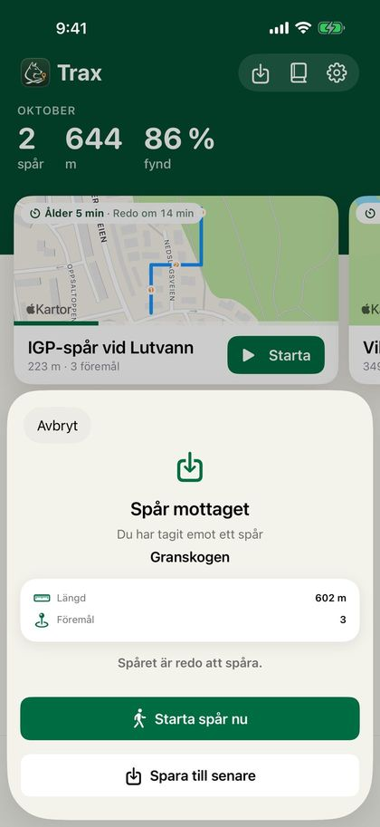
Viktigt: Skicka inte spåret med Meddelanden. Om meddelandet går som sms i stället för iMessage kommer filen inte fram, och det är svårt att veta i förväg vilket det blir.
Ska hundföraren inte se spåret innan det är spårat väljer du ”Till en annan Trax-användare, som okänt spår”. Det finns i arket ”Spara spår” och under delningsknappen i spåröversikten innan spåret är spårat. Mottagaren ser bara starten, en grön droppe med orange tass, inte rutten, föremålen eller hur många föremål det är. Spåröversikten visar kortet ”Spåret är skickat som okänt spår”, och ”Okänt spår” är påslaget när spåret startas. Tryck på ”Visa spåret” om du vill se hela spåret ändå.
Tips: Ett okänt spår döljs i Trax, men filen är inte krypterad. Äldre versioner av Trax och andra kartappar kan visa hela spåret.
Filen innehåller spårläggarens rutt, föremålen med beskrivning, underlaget, spårtypen, störspåren och allt som hör till ett viltspår. Har hunden redan spårat spåret följer även hundens rutt och bedömningen med, och mottagaren får bara valet ”Spara”. Spåret hamnar då under ”Avslutade spår”.
Du kan också trycka på ”Importera spår” under Inställningar › Spår och data och välja en fil från appen Filer. GPX-filer från andra appar och GPS-enheter fungerar också. Välj ”GPX (andra appar)” när du vill öppna spåret i en annan kartapp.
Öppnar du en Trax- eller GPX-fil med ett spår som redan finns i Trax frågar appen ”Spåret är redan sparat”. Välj ”Spara som nytt spår”, ”Öppna sparat spår” eller ”Avbryt”.
Har spårläggaren ingen iPhone? Då kan spåret läggas i vilken GPS-app som helst som sparar GPX-filer. Spårläggaren sparar en waypoint där varje föremål läggs ut, exporterar spåret som GPX och skickar filen med e-post. Du trycker på filen och väljer Trax, precis som med en Trax-fil.
Waypointerna blir föremål, med namnet som beskrivning, och du får en avisering när hunden närmar sig dem. Föremål kan inte läggas till i Trax i efterhand, så utan waypoints i filen kommer spåret utan föremål. Skicka ett spår per fil. Har filen två spår läser Trax det andra som hundens rutt.
Spåret får märket ”Exporterat” först när delningen är klar, oavsett om du delar en Trax-fil, GPX eller PDF. Om du avbryter delningsarket markeras det inte.
Tips: Vill ni ha ett gemensamt arkiv i träningsgruppen? Skapa en mapp i iCloud Drive i appen Filer och dela den med gruppen. Välj ”Spara i Filer” när du exporterar ett spår, och lägg Trax-filen i den delade mappen. De andra trycker på filen i mappen och öppnar den i Trax, precis som från e-post.
26
PDF-rapport
I spåröversikten trycker du på delningsknappen överst, väljer ”PDF (flera)” och markerar ett eller flera avslutade spår. Du får en PDF med ett spår per sida, äldst först, med karta, nyckeltal, föremål, fynd, underlag, anteckningar, bedömning och väder, redo att skicka eller skriva ut.
Nyckeltalen innehåller också spårtyp, vinklar, ”Inom X m från spåret” och ”Tappade spåret”, och hundförarens rutt är färgad efter avvikelse på kartan, med gränsen du har valt i spåröversikten (se ”Avvikelse från spåret”). Viltspår har också blodmängd, spårsko/klöv och blodavbrotten. Varje föremål listas med koordinat i formatet du har valt under Inställningar › Karta och spår, och hur noggrann GPS:en var när föremålet lades ut, till exempel ”±4 m noggrannhet”. Äldre spår sparade inte noggrannheten, och då står det ”noggrannhet okänd”.
Vill du ha alla spår för en hund trycker du på tassen på hemskärmen och sedan på dokumentknappen uppe till höger på hundsidan. Välj hund, slå på ”Välj period” om du bara vill ha spåren mellan två datum, och tryck på ”Skapa PDF” längst ner. PDF:en får ett försättsblad med sammanfattning, snittbetyg och en lista över spåren, följt av en sida per spår. Spåren i rapporten får märket ”Exporterat”.
Tips: PDF-rapporten fungerar bra som träningsdagbok eller för att visa din instruktör.
27
Hundar
Registrera hundarna du tränar med, så ser du vilken hund som spårade varje spår.
- Gå till Inställningar › Mina hundar, eller tryck på ⋯ på hundsidan.
- Tryck på ”Lägg till hund” och skriv namnet.
- Tryck på ”Spara”.
Du kan också lägga till en hund där du väljer hund: tryck på ”Ny hund …” sist bland hundknapparna innan du startar ett spår, eller under ”Lagt för hund” i bladet ”Spara spår”, eller i menyn när du trycker på hundmärket i spåröversikten. Skriv namnet och tryck på ”Spara”, så läggs hunden till i listan och väljs direkt. Har du inga hundar ännu öppnar ”Lägg till hund” samma namnfält.
När du har registrerat hundar väljer du hund när du startar ett spår. Spårläggaren kan välja vem spåret är lagt för (se ”Spara spåret”), och då är den hunden förvald. Har du bara en hund är den förvald. Hunden visas i spåröversikten och i PDF-rapporten.
Du kan byta hund i efterhand i spåröversikten. På sidan ”Avslutade spår” (tryck på ”Visa alla” på hemskärmen) kan du visa spåren för en hund i taget med knapparna överst.
Hundsidan: Tryck på tassen överst på hemskärmen. Har du flera hundar väljer du hund med knapparna överst. Har hunden spårat flera spårtyper väljer du spårtyp under, och är IGP-spåren lagda för flera nivåer visas också knappar för nivå. Överst står hur många spår hunden har spårat och när det senaste spåret var.
Under finns fyra nyckeltal: ”spår totalt”, ”senaste 30 dagarna”, ”föremål hittade” och ”på spåret” (genomsnittet av hur stor del av varje spår som låg inom gränsen för avvikelse), och sedan rutorna ”Mål”, ”Träningsmoment” och ”Utveckling”. Längst ner öppnar ”Se … spår” sidan ”Avslutade spår” med hunden och spårtypen valda. Dokumentknappen överst skapar PDF för hunden (se ”PDF-rapport”), och ⋯ har ”Lägg till hund” och ”Mina hundar”.
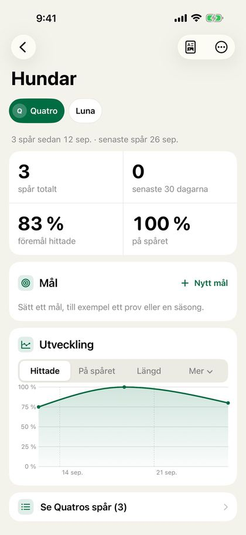
”Utveckling” är ett diagram över hundens avslutade spår över tid. Välj vad diagrammet ska visa: ”Hittade”, ”På spåret” eller ”Längd”, eller under ”Mer”: ”Spårets ålder”, ”Betyg”, ”Blod” (blodmängd per 100 meter, när hunden har minst två viltspår med blodmängd) eller ”Mat” (maten på IGP-spår, när hunden har minst två IGP-spår med mat vald). Diagrammet visas när hunden har minst två spår. Saknar spåren värdet du har valt står det att det finns för få spår för att visa ett diagram.
”Arbetstid” under ”Mer” visar hur lång tid hunden använde på IGP-spåren, när hunden har minst två IGP-spår. Är IGP-spåren lagda för olika nivåer visas egna knappar för nivå under spårtyperna, till exempel ”Alla nivåer”, ”IGP 1” och ”IGP 2”. Välj en nivå, så visar siffrorna och diagrammet bara spår lagda för den nivån, och du jämför lika med lika. Med en nivå vald visar ”Arbetstid” en streckad linje för max arbetstid på nivån, och spår över linjen får en orange punkt. FH-nivåerna har ingen linje.
Väljer du ”Föremålssök” eller ”Ytsök” visar hundsidan ”Antal” i stället för ”spår totalt”, och inte ”på spåret” eller mål. Diagrammet för sök visas när hunden har minst två sök. Sök räknas aldrig med i statistiken för spår.
Mål: Rutan ”Mål” på hundsidan visar målen med förloppsstaplar. Tryck på ”Nytt mål” för att skapa ett. Under ”Alla spår” ser du alla mål, med spårtypen som etikett. Väljer du en spårtyp ser du bara målen för den, och knappen heter till exempel ”Nytt IGP-mål”, med spårtypen redan vald. Har hunden inga spår ännu visar hundsidan bara målen. Du kan också lägga in mål under Inställningar › Mina hundar: tryck på ”…” vid hunden och välj ”Mål”.
- ”Namn”: till exempel tävling eller Säsong 2027.
- ”Slutdatum”: ”Datum” (spår från i dag fram till datumet räknas, till exempel inför en tävling) eller ”Period” (spår mellan två datum räknas, till exempel en säsong).
- ”Spårtyp”: ”Alla spår”, eller bara spår, IGP-spår eller viltspår.
- ”Krav”: ett eller flera av ”Längd”, ”Spårets ålder”, ”Antal spår”, ”Hittat” och ”På spåret”. Sök räknas aldrig.
Som standard kan varje krav nås på ett eget spår: längd och spårets ålder är det bästa spåret i perioden, och ”På spåret” är snittet av alla spår. Har målet minst två av längd, spårets ålder, hittat och på spåret kan du slå på ”Alla krav på samma spår”. Då är målet uppnått först när ett spår uppfyller alla krav samtidigt, och målet visar ”Närmast: spåret …” eller ”Uppnått på spåret …”. ”Antal spår” räknar alltid alla spår i perioden.
Tips: Exempel: målet är 1000 m, 2 timmars spårålder och 90 % på spåret. Utan ”Alla krav på samma spår” är målet uppnått när hunden har spårat ett spår på 1000 m, ett annat som har legat i 2 timmar, och har 90 % på spåret i snitt. Med reglaget på måste det vara ett och samma spår som är 1000 m, har legat i 2 timmar och där ni var 90 % på spåret.
Tryck på ett mål för att ändra eller radera det. Målen ingår i säkerhetskopian.
Om du raderar en hund behåller spåren hundens namn. Hunden visas under Inställningar › Mina hundar › ”Tidigare hundar” så länge den har spår, och där kan du slå av reglaget för att dölja den i hundfiltret. Spåren finns kvar under ”Alla”.
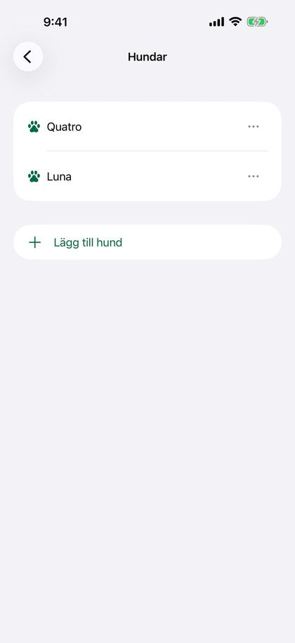
28
Inställningar
Överst i Inställningar finns ”Mina hundar”. Under ”Appen” finns Aviseringar, Karta och spår, Batteri och Språk. Under ”Spår och data” finns ”Importera spår”, som öppnar ett spår från en Trax- eller GPX-fil, till exempel ett spår som någon har skickat till dig, och Säkerhetskopiering. Under ”Hjälp” finns Användarmanual och Om Trax. Tryck på en rad för att öppna sidan.
- Aviseringar: aviseringar om föremål i närheten, blodavbrott och blod igen, tappat spår och korsande störspår, IGP-krav och vägledning från IGP-mallen medan spåret läggs, uppläsning av spårad sträcka, samt aviseringstyp med röstaviseringar. Se ”Aviseringar och röstaviseringar”.
- Karta och spår: välj färg och ikon för föremålsmarkörerna (siffra, kartnål, flagga, tass eller påse), ”Spårläggarens färg” och ”Hundförarens färg”. ”Vrid kartan efter min riktning” vrider kartan åt det håll du står medan du lägger spår eller hunden spårar; när det är av är norr alltid uppåt. Här väljer du också koordinatformat: decimalgrader (DD), UTM, grader/minuter/sekunder (DMS) eller MGRS. Under ”Fynd” slår du på ”Registrera fynd automatiskt” och väljer avståndet (se ”Registrera fynd”). Under ”IGP-spår” väljer du ”Steglängd” (se ”Spårtyp och viltspår”).
- Batteri: ”Batterisparläge för GPS” drar mindre ström på långa spår. Spåret blir lite mindre detaljerat, men närhetsaviseringen och ”Hittat” fungerar som vanligt. Under inspelning visas batterinivån överst, och appen varnar vid 20 och 10 procent, även med låst skärm.
- Säkerhetskopiering: automatisk kopia till iCloud Drive, och säkerhetskopior du skapar själv. Se ”Säkerhetskopia och ny telefon”.
- Mina hundar: lägg till, byt namn på eller radera hundar, och lägg in mål för varje hund (tryck på ”…” vid hunden). Under ”Tidigare hundar” kan du dölja raderade hundar i hundfiltret.
- Språk: välj ”Telefonens språk”, Norsk, English, Svenska eller Deutsch. Det nya språket visas nästa gång Trax startas, så stäng appen helt och öppna den igen. Widgeten följer alltid telefonens språk.
- Om Trax: ”Skicka feedback” öppnar ett mejl till mig med appversion, iOS-version och telefonmodell redan ifyllda. Skriv din fråga, ditt fel eller önskemål överst. ”Skriv en recension” öppnar Trax i App Store, där du kan ge stjärnor och skriva en recension. ”Integritetspolicy” öppnar integritetspolicyn på Trax webbplats.
Tips: Tryck på ”?” vid en sektion för att se en förklaring av inställningarna där. Tryck igen för att dölja den.
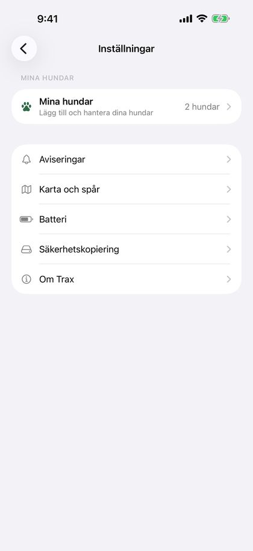
29
Säkerhetskopia och ny telefon
Ta vara på dina spår om du tappar bort telefonen eller byter till en ny.
”Automatisk kopia till iCloud Drive” under Inställningar › Säkerhetskopiering är på som standard. Trax lägger då en säkerhetskopia i mappen ”Trax” i din egen iCloud Drive några sekunder efter att ett spår eller en hund har sparats eller ändrats, så du slipper komma ihåg det själv. Medan ett spår läggs eller pågår väntar Trax tills spåret är sparat. Under reglaget står det när den senaste kopian gjordes, eller att iCloud Drive är avstängt på telefonen.
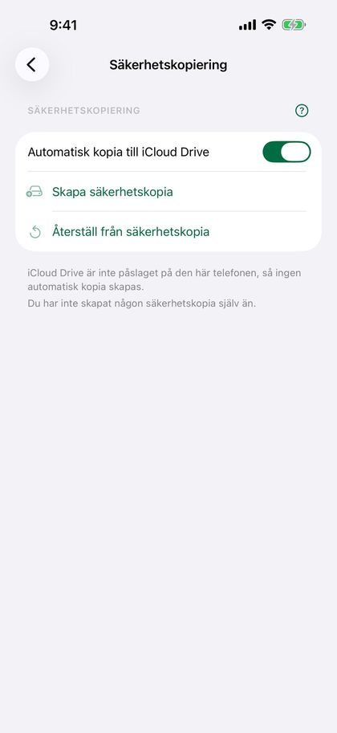
Du kan också skapa en säkerhetskopia själv med ”Skapa säkerhetskopia”. Du får en fil (.traxbackup) med alla spår och hundar, som du kan spara i Filer eller iCloud Drive, eller skicka till dig själv. Under knapparna står det när du senast skapade en.
- Ny telefon, eller Trax installerat på nytt: Trax frågar första gången om dina spår ska hämtas från iCloud Drive. Välj ”Återställ”.
- Har du en säkerhetskopia som du skapat själv trycker du på filen (den öppnas i Trax), eller väljer ”Återställ från säkerhetskopia” under Inställningar › Säkerhetskopiering.
- Trax visar hur många spår och hundar säkerhetskopian innehåller, och frågar innan något läggs till.
Återställningen lägger bara till spår och hundar som saknas. Inget raderas eller skrivs över. En hund med samma namn som en hund på telefonen blir samma hund. Allt sker på telefonen och i din egen iCloud Drive, utan konto.
30
Radera och återställa spår
Svep ett spår åt vänster på hemskärmen eller på sidan ”Avslutade spår” för att radera det. Du kan också öppna ett spår, trycka på ⋯ överst och välja ”Radera spår”. Du får alltid frågan innan något raderas.
Viktigt: Raderade spår kan inte återställas, om de inte finns i en säkerhetskopia. Exportera spåret som GPX eller PDF först om du vill spara det.
Om appen stängs mitt under en spårläggning, till exempel för att telefonens batteri tog slut, har spåret sparats under tiden. Nästa gång du öppnar Trax visas ”Ofullständig spårläggning” överst. Välj ”Fortsätt” för att lägga vidare, ”Avsluta” för att spara spåret som det är, eller ”Radera”.
Om appen stängs mitt under spårningen listas spåret under ”Redo att spåra” med ”Spåret pågår”. Öppna det och tryck på ”Fortsätt” för att fortsätta från pausen. Vill du hellre börja om trycker du på bakåtpilen och ”Släng hundens spår”.
31
Tips och felsökning
- Spåret blir hackigt eller får luckor: kontrollera att Trax har platsåtkomst och att ”Exakt plats” är på.
- GPS är mindre exakt i tät skog, i branta dalar och mellan höga byggnader. Vänta gärna tills positionen har stabiliserat sig innan du trycker på ”Starta”.
- Strömsparläge kan ge färre GPS-punkter. Ladda telefonen före långa spår, eller slå på ”Batterisparläge för GPS” under Inställningar › Batteri.
- Ser du inte spåret på låsskärmen? Kontrollera att Live Activities är påslaget under Inställningar › Trax på din iPhone.
- Får du ingen notis om att spårets ålder är uppnådd? Kontrollera att notiser är på för Trax under Inställningar › Trax › Notiser på din iPhone, och slå på ”Tidskänsliga notiser” om du använder Fokus.
- Hör du inte röstaviseringarna? Kontrollera att ”Aviseringar” och ”Läs upp aviseringar” är på under Inställningar › Aviseringar › Aviseringstyp, och att volymen är uppskruvad. Tryck på ”Spela upp exempel” för att testa.
- Tar du inte emot spåret? Skicka det med AirDrop eller e-post, inte Meddelanden. Kontrollera att filnamnet slutar på .trax eller .gpx, och prova ”Importera spår” i Inställningar.
- Frågor eller problem? Tryck på ”Skicka feedback” under Inställningar › Om Trax, eller skicka ett mejl till post@trax-dogtracking.no.
32
Integritet
Alla spår sparas på din telefon. Trax har inget konto och ingen egen server. Om du använder iCloud Drive lägger Trax en säkerhetskopia i mappen ”Trax” i din egen iCloud Drive. Det kan du stänga av under Inställningar › Säkerhetskopiering. Dina spår delas bara när du själv exporterar dem.
Bilden för sociala medier skapas på din telefon. Om du väljer ”Spara bild” frågar iOS om Trax får lägga till bilder i Bilder. Trax kan bara lägga till bilder, inte se dina bilder. Väljer du en egen bild att lägga spåret över får Trax bara se den bild du väljer.
För att hämta vädret skickas positionen och tidpunkten där spåret startade, och där hunden startade spåret, till Apple Väder. Apple kopplar inte förfrågan till dig eller ditt Apple-konto, och inga träningsdata skickas.
När du stoppar ett spår skickas startpunkten till norska Kartverkets ortnamnstjänst när du är i Norge, och annars till Apple, för att hitta ortnamnet i spårets namn. Inga träningsdata skickas, och ortnamnet sparas bara som spårets namn. Utan nätverk blir namnet datum och klockslag.
Hela integritetspolicyn hittar du under Inställningar › Om Trax › Integritetspolicy.